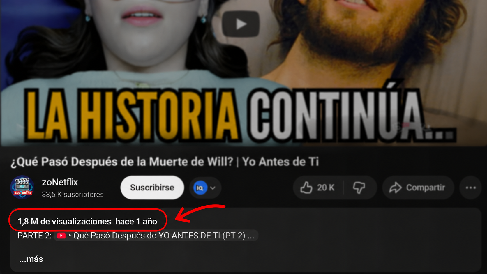

Convierte tu idea en un video profesional y viral.
Soy Christian Mendoza, editor de video profesional con más de cuatro años de experiencia desarrollando contenido audiovisual de alto impacto[cite: 1]. Especializado en YouTube, documentales, y automatización de flujos de trabajo con Inteligencia Artificial[cite: 1].
Lo que hago
Edición directa, moderna y adaptada a lo que funciona actualmente en redes.
Videos con IA
Producción apoyada en herramientas de nueva generación como Google Veo, Kling AI, Grok, ElevenLabs y Midjourney[cite: 1].
Shorts y YouTube
Videos cortos y largos, narrativa visual, subtítulos dinámicos, ritmo impecable en CapCut y optimización para retención[cite: 1].
Estilo Documental
Storytelling profundo, diseño de sonido y corrección de color para llevar cada idea a un acabado cinematográfico[cite: 1].
Resultados comprobados
Ya he trabajado proyectos con resultados aprobados y videos que han alcanzado cifras cercanas a los 2 millones de vistas.
+1.9M
Vistas alcanzadas en videos editados
Mi enfoque combina ritmo, claridad, retención visual y adaptación a tendencias.

¿Tienes una idea o un canal que quieres mejorar?
Hablemos directo. Cuéntame qué tipo de video necesitas y revisamos cómo llevarlo a un formato más atractivo, profesional y listo para publicar.
Contáctame y cuéntame tu idea